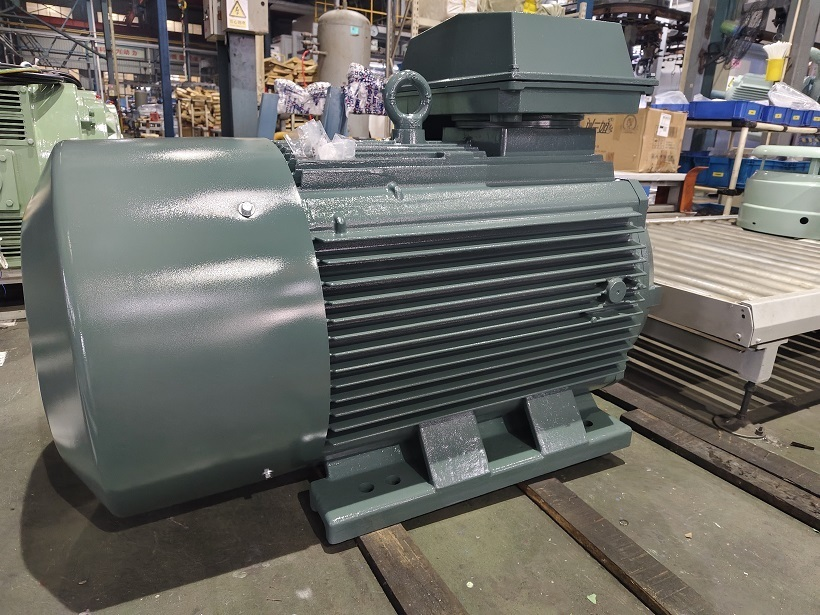
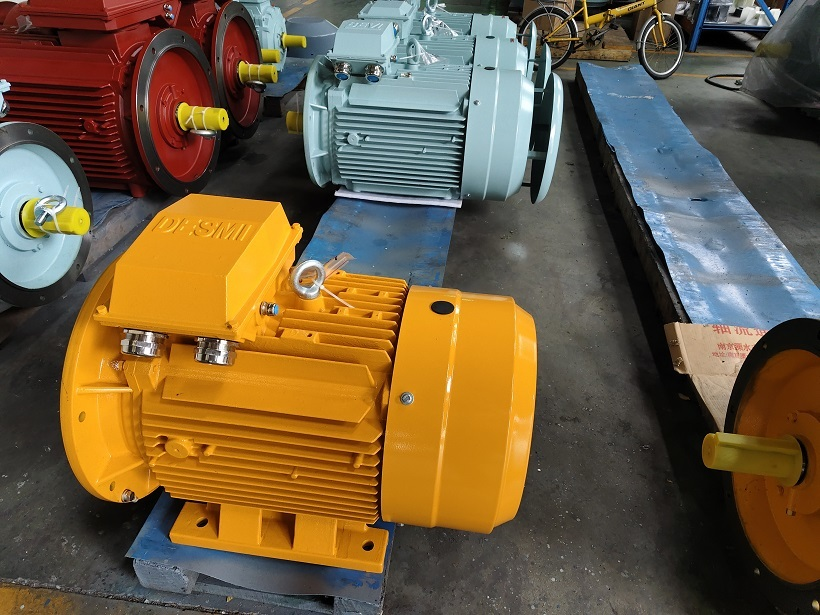
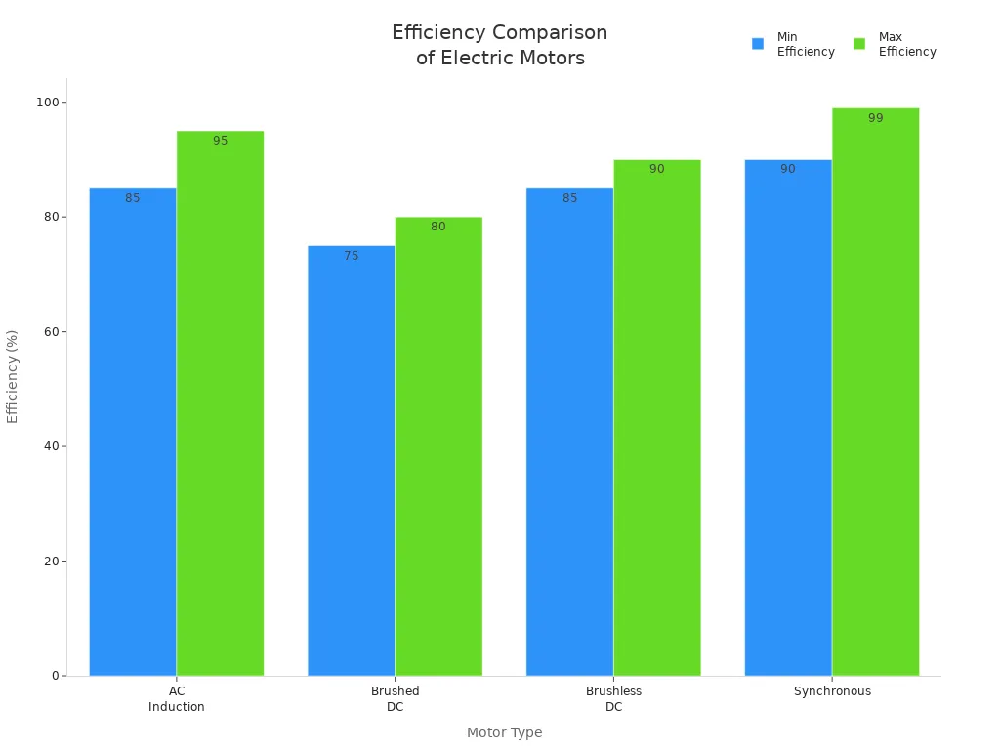

Industrial News

A Comprehensive Guide to AC Motors and Their Applications
AC motors, or alternating current motors, are vital components in our daily lives. I often marvel at how these machines power everything from household appliances to large industrial systems. The global market for AC motors is projected to reach an impressive $95.83 billion in 2024, highlighting their significance in modern technology.
In various industries, such as HVAC, transportation, and manufacturing, AC motors play a crucial role. They drive compressors, pumps, and even elevators, ensuring smooth and efficient operations. Here are some key sectors that rely on AC motors:

- Aerospace & Transportation
- Industrial Machinery
- HVAC Equipment
- Motor Vehicles
- Household Appliances
As I explore the world of AC motors, I see their impact everywhere, making them indispensable in our technological landscape.
Key Takeaways
- AC motors convert electrical energy into mechanical energy using electromagnetic induction, with key parts called the stator and rotor.
- There are different types of AC motors, including induction (asynchronous) and synchronous motors, each suited for specific uses in homes and industries.
- AC motors offer many benefits like low maintenance, high energy efficiency, durability, and the ability to provide full torque even at zero speed.
- These motors power a wide range of applications, from household appliances like refrigerators and fans to heavy industrial machines and transportation systems.
- Advances in technology and materials will continue to improve AC motor performance, making them even more efficient and important in the future.
Understanding AC Motors
When I think about AC motors, I realize they are more than just machines; they are intricate systems that rely on fundamental principles of electromagnetism. Understanding these motors begins with recognizing their two main components: the stator and the rotor.
-
Stator: This is the stationary part of the motor. It contains insulated windings arranged in slots on a laminated core. When I supply alternating current to these windings, they create a rotating magnetic field. This field is essential for the motor's operation.
-
Rotor: The rotor is the rotating part connected to the motor shaft. It interacts with the magnetic field produced by the stator, generating mechanical rotation. A common type of rotor is the squirrel cage rotor, which is known for its robustness and efficiency.
The operation of an AC motor is based on several key physical principles:
- Electromagnetic Induction: The stator's alternating current generates a rotating magnetic field that induces current in the rotor.
- Lenz's Law: This principle states that the induced current in the rotor will create a magnetic field that opposes the change, causing the rotor to follow the stator's rotating field with a slight lag known as slip.
- Slip: This lag is crucial for torque production. The rotor must lag behind the stator's field to generate the necessary force for rotation.
- Force Interaction: The interaction between the magnetic fields of the stator and rotor produces a force on the rotor, causing it to rotate.
- Fleming's Left-Hand Rule: I often use this rule to determine the direction of the force and rotation in the motor.
The materials used in constructing AC motors also play a significant role in their performance. Common materials include:
- Stator and Rotor Cores: Laminated steel sheets help reduce eddy currents and hysteresis losses.
- Stator Windings: Typically made of insulated copper wire, these windings are essential for creating the magnetic field.
- Rotor Conductor Bars: Often made of aluminum or copper, these bars are crucial for the rotor's operation.
- Shaft and Enclosure: Usually constructed from steel, these components provide mechanical strength and protection.
In industrial applications, AC motors operate at various voltage levels. For instance, common voltages include 208V, 480V, and even up to 600V, depending on the specific requirements of the machinery. The standard frequency for AC motors in the U.S. is 60 Hz, which defines the synchronous speed of the motor.
Understanding these components and principles not only enhances my appreciation for AC motors but also highlights their efficiency and reliability in various applications.

How AC Motors Work
When I delve into how AC motors work, I find it fascinating to see how they convert electrical energy into mechanical energy. This transformation occurs through a series of well-coordinated steps:
- Electrical Energy Supply: I start by supplying electrical energy to the motor windings. This energy flows into the stator, the stationary part of the motor.
- Magnetic Field Generation: The stator generates magnetic fields, either through permanent magnets or energized coils. This magnetic field is crucial for the motor's operation.
- Induction in the Rotor: As current flows through the rotor windings, it creates its own magnetic field. This field interacts with the stator's magnetic field, producing forces known as Lorentz forces.
- Torque Production: The interaction between these magnetic fields generates torque, causing the rotor to spin. The alternating current naturally reverses the magnetic fields, allowing for continuous rotation without mechanical commutators.
- Mechanical Output: Finally, the rotor shaft rotates, providing mechanical kinetic energy as output. This entire process showcases how an electric motor efficiently converts electrical energy into mechanical energy.
The principle of electromagnetic induction plays a vital role in this process. According to Faraday's law, the rotating magnetic field produced by the stator induces an electric current in the rotor. This induced current creates its own magnetic field, which opposes the stator's field, causing the rotor to turn in an attempt to "catch up" with the rotating field. This interaction is what drives the motion of the AC motor.
I also find it interesting how the speed of an AC motor varies with changes in supply frequency. The speed is directly proportional to the supply frequency and inversely proportional to the number of poles in the motor. For example, I can calculate the synchronous speed using the formula:
Speed = 120 × frequency (Hz) / number of poles
If I have a 4-pole motor running at 60 Hz, it operates at approximately 1800 RPM. However, the actual rotor speed is slightly less due to slip, which is essential for torque production. By varying the supply frequency, I can change the synchronous speed and, consequently, the motor's operating speed. This flexibility is often achieved using Variable Frequency Drives (VFDs), which allow me to control the motor speed effectively.
Types of AC Motors
When I explore the world of AC motors, I find several types, each with unique characteristics and applications. Understanding these types helps me appreciate their versatility in various settings. Here are the main categories of AC motors:
1. Asynchronous (Induction) Motors
Asynchronous motors are the most common type I encounter. They operate based on the principle of electromagnetic induction. The rotor speed is slightly less than the synchronous speed, which is why they are called "asynchronous." Here are two subtypes:
-
Squirrel Cage Induction Motor: This motor features a rotor made of conductive bars. It is simple, robust, and requires minimal maintenance. I often see it used in fans, pumps, and conveyor belts.
-
Wound Rotor Induction Motor: This type has windings on the rotor and uses slip rings. It allows for adjustable starting torque and speed, making it ideal for industrial equipment that requires variable speed.
2. Synchronous Motors
3. Single-phase and Three-phase Motors
I also notice a significant difference between single-phase and three-phase motors. Single-phase motors operate on a two-wire supply and require capacitors for startup. They are smaller and suited for light applications like fans and small tools. In contrast, three-phase motors use a three-wire supply, generating a rotating magnetic field that allows for self-starting. These motors deliver higher power and efficiency, making them ideal for heavy machinery in industrial settings.
| Category | Subtypes | Typical Applications |
|---|---|---|
| Asynchronous (Induction) | Squirrel Cage Induction Motor | Fans, pumps, conveyor belts |
| Wound Rotor Induction Motor | Industrial equipment requiring variable speed/torque | |
| Synchronous | AC Excited Synchronous Motor | Generators, precision machinery |
| Permanent Magnet Synchronous Motor | Precision equipment, synchronous speed control drives | |
| Single-phase AC Motors | Single-phase Induction Motor | Small power devices: fans, power tools, appliances |
| Three-phase AC Motors | Three-phase Induction Motor | Industrial pumps, fans, compressors |
Understanding these types of AC motors allows me to choose the right one for specific applications. Each type has its strengths, making them suitable for various tasks in both commercial and industrial settings.
Advantages of AC Motors
When I consider the advantages of AC motors, I realize they stand out in many ways compared to their DC counterparts. Here are some key benefits that I find particularly compelling:
-
Lower Maintenance: AC motors operate without brushes and commutators. This design significantly reduces maintenance needs. I appreciate that I can rely on them for longer periods without frequent upkeep.
-
Energy Efficiency: AC motors, especially when paired with Variable Frequency Drives (VFDs), offer superior energy efficiency. They maintain a high power factor at all speeds, which helps lower operating costs. In fact, I’ve seen energy savings of 30% to 50% in applications like pumps and fans when using VFDs.
-
Continuous Full Torque at Zero Speed: Unlike DC motors, AC motors can produce full torque continuously at zero speed without damage. This feature is crucial in applications where starting under load is necessary.
-
Durability and Longevity: AC motors typically last longer than DC motors. I’ve learned that under normal operating conditions, they can last 15 years or more. Their robust design contributes to their reliability and durability.
-
Lower Startup Power Demand: AC motors require less power during startup. This characteristic not only saves energy but also reduces the strain on electrical systems.
-
Customizability: AC motors adapt well to varying speed and torque requirements. This flexibility allows me to use them in diverse applications, from small household appliances to large industrial machines.
Here’s a quick comparison of AC and DC motors that highlights these advantages:
| Advantage | AC Motors | DC Motors |
|---|---|---|
| Maintenance | Lower maintenance due to brushless operation | Requires regular brush and commutator upkeep |
| Energy Efficiency | Superior, especially with VFDs; consistent high power factor at all speeds | Power factor decreases at lower speeds, increasing energy costs |
| Torque at Zero Speed | Can produce continuous full torque without damage | Cannot sustain full torque at zero speed without damage |
| Startup Power | Lower startup power demand | Higher startup power and torque |
| Durability | Greater durability and longer lifespan | More wear due to brushes and commutators |
| Customizability | Better adaptability for varying speed and torque needs | Easier speed control and faster response times |
In my experience, these advantages make AC motors a preferred choice in many industrial and commercial applications. Their efficiency, durability, and low maintenance requirements truly set them apart.
Applications of AC Motors
AC motors play a crucial role in many industries and everyday applications. I find it fascinating how these motors power everything from large industrial machines to household appliances. Here are some key areas where I see AC motors making a significant impact:
Industrial Applications
In the industrial sector, AC motors are essential for various operations. They drive heavy machinery and equipment, ensuring smooth production processes. For instance, in the petrochemical industry, I often see AC motors powering compressors, pumps, and conveyors. Similarly, in manufacturing, they operate die casting machines and injection molding machines.
Here’s a quick overview of how AC motors are utilized across different industries:
| Industry / Sector | Examples of AC Motor Applications / Equipment |
|---|---|
| Petrochemicals | Compressors, pumps, conveyors, shredders |
| Mining | Heavy-duty equipment, conveyors, pumps |
| Cement Production | Crushers, conveyors, fans |
| Sugar Plants | Pumps, conveyors, shredders |
| Manufacturing | Die casting machines, machine tools, injection molding machines |
| Oil & Gas Drilling | Pumps, compressors |
| Water Treatment | Pumps, blowers |
| Wind Power | Turbines |
| Municipal Infrastructure | Elevators, escalators, water treatment equipment |
| HVAC | Air conditioning compressors, fans, blowers |
Household Applications
In my home, I rely on AC motors for many appliances. They are commonly found in refrigerators, air conditioners, and washing machines. For example, the compressor motor in my refrigerator keeps my food fresh, while the fan motors in my air conditioner ensure a comfortable environment. Here are some household applications of AC motors:
- Refrigerators: Compressor motors circulate refrigerant.
- Air Conditioners: Motors power cooling and ventilation components.
- Washing Machines: Various motors drive the drum and spin cycles.
- Fans: AC motors provide airflow for cooling.
- Vacuum Cleaners: Universal motors offer high starting torque for suction.
Transportation Systems
AC motors also play a vital role in transportation systems. I notice their presence in electric vehicles and trains, where they serve as traction motors. These motors convert electrical energy into mechanical energy, allowing for efficient movement. The development of variable frequency drives has made AC motors even more effective in these applications.
AC motors hold immense significance in our daily lives and industries. They power everything from household appliances to heavy machinery, making them essential for modern technology. I appreciate how their efficiency and reliability contribute to energy savings and operational effectiveness.
In summary, AC motors operate through electromagnetic induction, with types including induction and synchronous motors. Their ability to adapt to various applications showcases their versatility. As I look to the future, I see exciting advancements on the horizon. Innovations in materials science, such as high-performance magnets and smart control systems, will enhance motor efficiency and performance. The AC motor market is projected to grow at a compound annual growth rate (CAGR) of 4.7% from 2025 to 2032, driven by industrial automation and the rise of electric vehicles. This growth presents new opportunities for manufacturers and users alike.
I believe that embracing these advancements will lead to even greater energy efficiency and sustainability in the years to come.